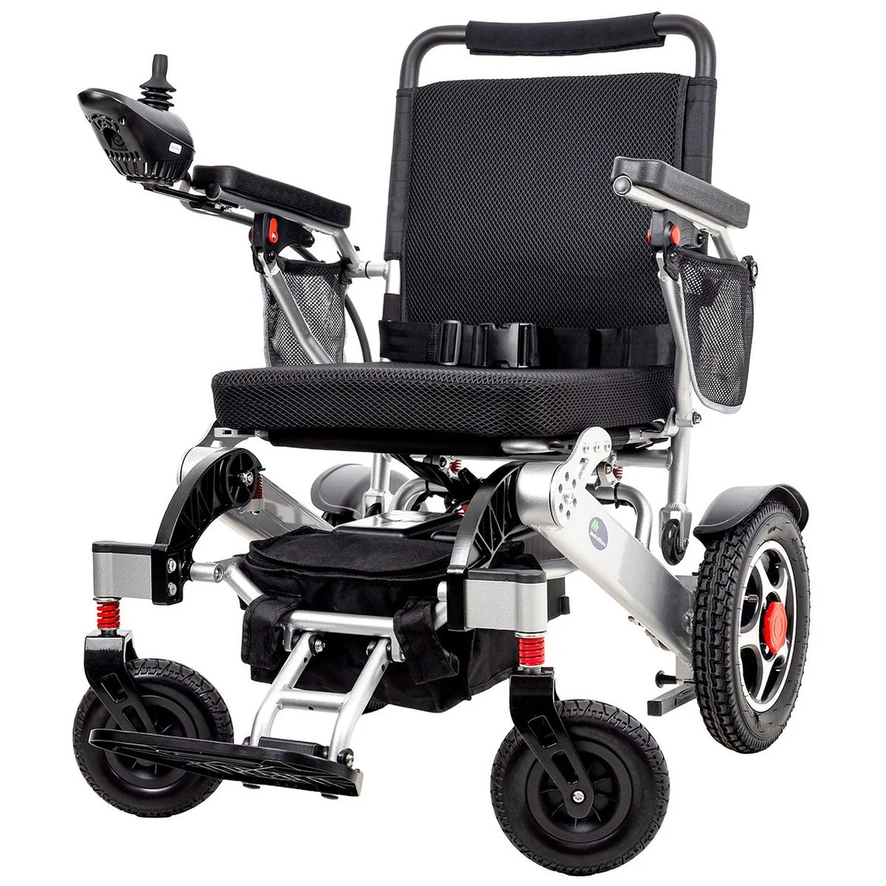
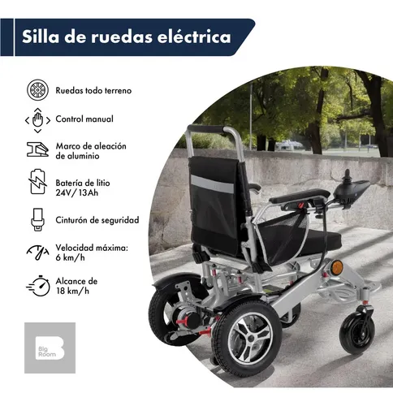
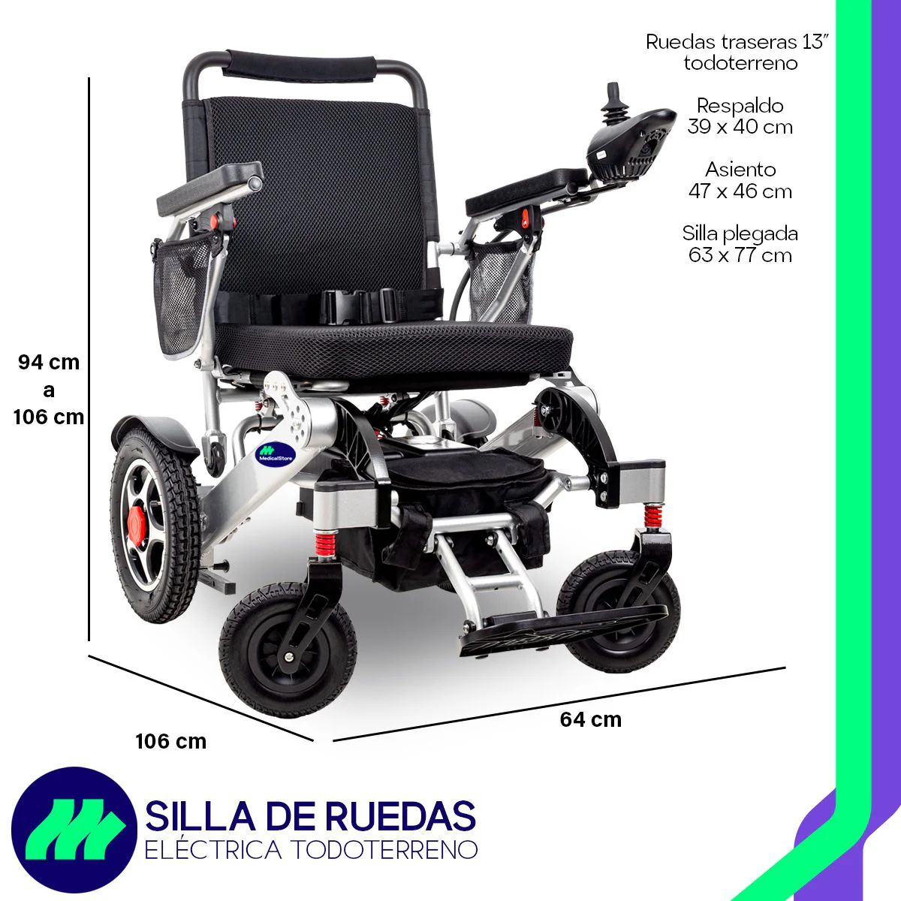
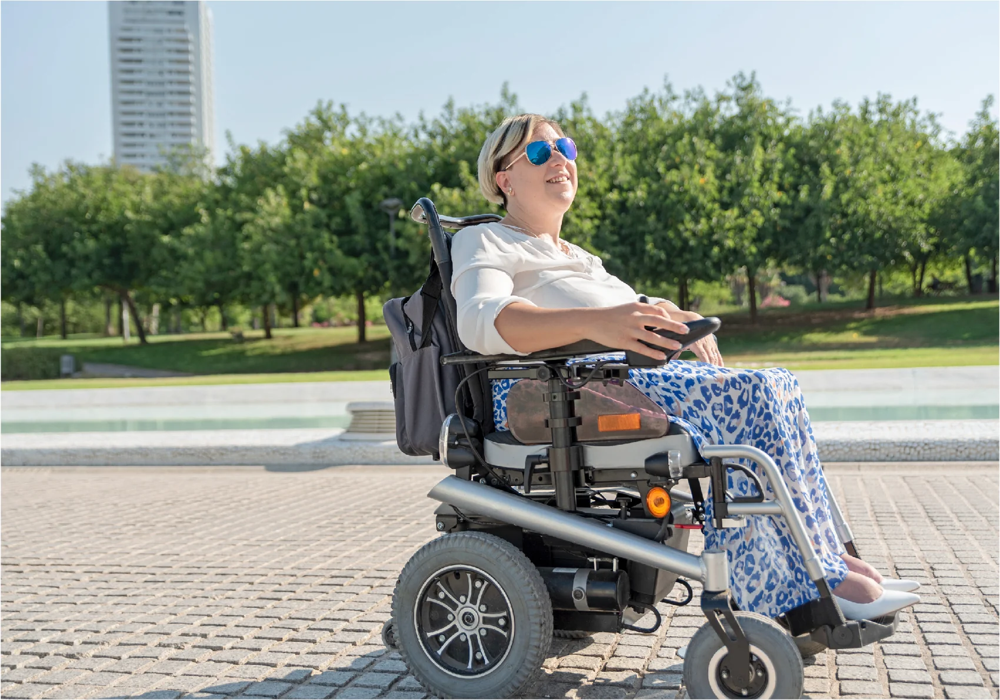

Neuro-tech es una silla de ruedas electromecánica inteligente diseñada para mejorar la calidad de vida de las personas con discapacidad motriz. El proyecto integra innovación tecnológica, control por voz, asistencia externa y sistemas de seguridad avanzados para ofrecer una experiencia de movilidad moderna, eficiente y segura.
Neuro-tech es una silla de ruedas electromecánica que en su funcionamiento básico realiza movimientos como arranque, retroceso y giros mediante un sistema de control. Tradicionalmente, este tipo de movilidad obliga al usuario a realizar esfuerzos físicos constantes.
Nuestro proyecto busca resolver esta problemática implementando comandos inteligentes que permiten a la persona desplazarse de un punto A a un punto B utilizando únicamente la voz o mediante asistencia externa, reduciendo considerablemente el esfuerzo locomotor y aumentando la independencia del usuario.
Permite controlar la silla mediante comandos de voz simples y sistemas externos de asistencia.
Facilita el desplazamiento independiente de personas con discapacidad motriz.
Incluye acceso mediante huella digital y botón de emergencia para situaciones de riesgo.
Integra neurotecnología y sistemas electromecánicos modernos enfocados en inclusión social.
Nuestro objetivo es facilitar y mejorar la movilidad de las personas con discapacidad mediante el uso de una silla de ruedas electromecánica inteligente, incorporando tecnologías avanzadas que permitan un desplazamiento seguro, autónomo y eficiente.
El proyecto busca reducir la dependencia de movimientos físicos tradicionales integrando sistemas de control por voz y control externo, permitiendo que el usuario se desplace con mayor comodidad, precisión y seguridad.
Asimismo, Neuro-tech promueve la inclusión, la independencia y una mejor calidad de vida aprovechando la combinación de neurotecnología y sistemas electromecánicos adaptados a distintas necesidades y entornos.
Permite desplazamientos autónomos tanto en interiores como exteriores sin asistencia constante.
Ideal para usuarios con movilidad reducida en brazos o manos.
La silla puede ser controlada por familiares o cuidadores.
Incluye un sistema de emergencia para solicitar ayuda inmediata.
Facilita la movilidad de pacientes y optimiza la atención médica.
Apoya la inclusión y autonomía de estudiantes con discapacidad.




El proyecto Neuro-tech es desarrollado por estudiantes organizados en departamentos especializados que trabajan en conjunto para lograr una solución tecnológica innovadora.